Terwinneke
Voor het vak User-Centered Design ontwierp ik een mobiele website voor Terwinneke, een frituur in Denderwindeke. De opdracht was om een bestaande horecazaak te kiezen en hun website opnieuw te ontwerpen, met een sterke focus op toegankelijkheid volgens de WCAG-richtlijnen (niveau AA).
Het doel was niet alleen een visueel aantrekkelijke website te maken, maar vooral een website die voor iedereen gebruiksvriendelijk is, inclusief mensen met een visuele beperking of die een schermlezer gebruiken.
Het project liep van eind november tot half december. Ik werkte individueel en gebruikte Figma voor de wireframes, designs en accessibility annotaties.
Projectcard
- Projectnaam:
- Terwinneke
- Type:
- Schoolproject, individueel project
- Duur:
- November - december 2025
- Tools:
- Figma
- Focusgebieden:
- Mobile UX, accessibility, WCAG
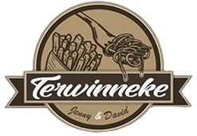
De opdracht
De leerkracht gaf ons een duidelijke briefing: ontwerp een website of app voor een café, brasserie of restaurant, waarbij je rekening houdt met de principes van toegankelijk design. De website moest minimaal bestaan uit een startpagina, een pagina met info over de zaak, een menu- of drankenkaart, een bestelmogelijkheid zonder betaaloptie, inclusief happy flow en unhappy flow, en een contactpagina.
We moesten mobile first werken, starten met wireframes en pas daarna overstappen naar het definitieve design. Tijdens het hele proces moesten we de WCAG-richtlijnen in acht houden en streven naar niveau AA. Daarnaast moesten we echte teksten gebruiken, voldoende aandacht besteden aan lettergrootte en lijnhoogte, minstens één scherm visualiseren in grote lettergrootte, accessibility annotaties toevoegen, tien toegepaste WCAG-succescriteria documenteren en een matrix opstellen die aantoont welke combinaties van brandkleuren voldoen aan WCAG-niveau AA met betrekking tot kleurcontrast.
Tijdlijn van het project
-
Mijlpaal 1:
wireframes, design, matrix brandkleuren
-
Mijlpaal 2:
accessibility annotaties, brandkleuren
-
Mijlpaal 3:
10 succescriteria
- Eindresultaat
Analyse van de bestaande website
Voordat ik begon met ontwerpen, bezocht ik de bestaande website van Terwinneke om een beeld te krijgen van de huidige situatie. Al snel merkte ik enkele duidelijke problemen op.
Op de pagina “Info” stond bijvoorbeeld geen inhoud, waardoor bezoekers niets te weten kwamen over de zaak zelf. Om te kunnen bestellen, moest je eerst een account aanmaken, wat een onnodige drempel vormt voor gebruikers die snel iets willen bestellen.
Bij het kiezen van sauzen was de interface onoverzichtelijk. Er werd een hele rij sauzen getoond met de belofte van foto’s, maar in werkelijkheid waren er geen afbeeldingen zichtbaar. Gebruikers moesten horizontaal scrollen om alle opties te zien, zonder visuele ondersteuning.
Dit maakte het moeilijk voor iedereen, maar vooral voor mensen met een visuele beperking of die een schermlezer gebruiken. Deze observaties vormden de basis voor mijn ontwerpbeslissingen.
Doelgroep
De primaire doelgroep van Terwinneke zijn mensen die snel en eenvoudig willen weten wat er te eten is, wat de openingsuren zijn, waar de frituur zich bevindt en hoe ze kunnen bestellen. Dit omvat zowel lokale bewoners als toevallige passanten die op zoek zijn naar een maaltijd.
Daarnaast wilde ik specifieke aandacht besteden aan gebruikers met een visuele beperking. Dit omvat mensen die volledig blind zijn en een schermlezer gebruiken, maar ook mensen met een beperkt zicht die afhankelijk zijn van groot contrast, grote lettertypes en duidelijke structuur.
Ik baseerde me op enkele typische gebruiksscenario’s: iemand die snel de openingsuren wil checken, iemand die thuis wil bestellen, iemand die wil weten welke sauzen beschikbaar zijn en iemand die met een schermlezer de website verkent.
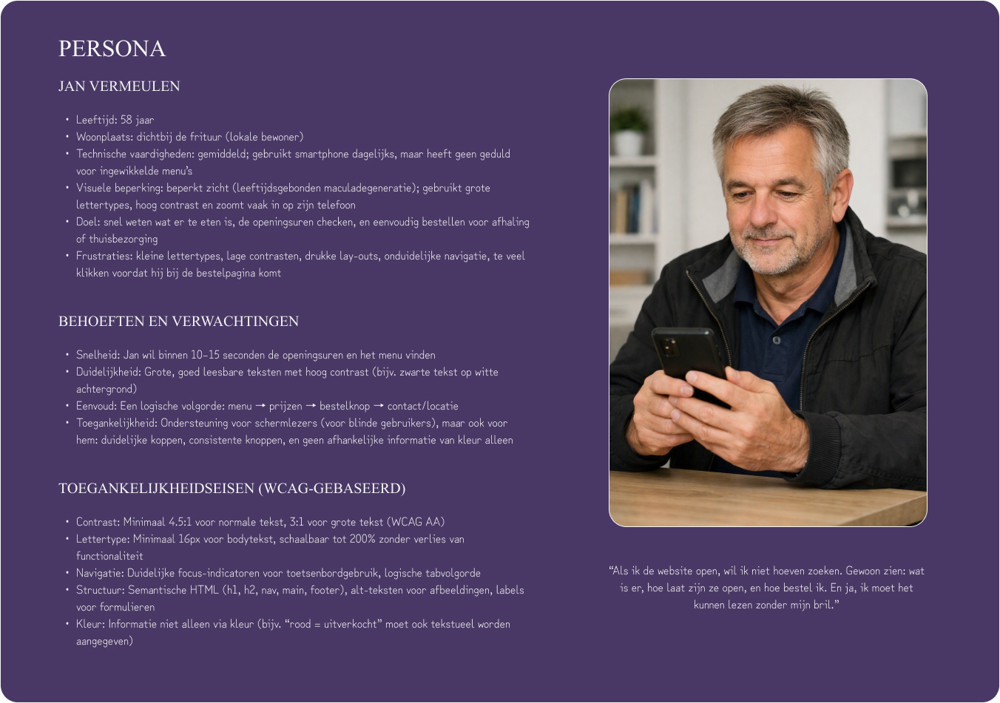
Mijn aanpak
Mijn aanpak volgde een gestructureerd proces. Ik begon met het analyseren van de bestaande website en het identificeren van de belangrijkste problemen. Daarna vertaalde ik deze inzichten naar een contentstructuur en user flows.
Vervolgens werkte ik low-fidelity wireframes uit, waarbij ik al rekening hield met toegankelijkheid. Pas toen ik tevreden was over de structuur, stapte ik over naar high-fidelity designs in Figma.
Tijdens het hele proces hield ik de WCAG-richtlijnen in het achterhoofd. Ik documenteerde mijn keuzes via accessibility annotaties, stelde een kleurcontrastmatrix op voor de merkkleuren en beschreef tien concrete WCAG-succescriteria die ik toepaste.
Van wireframes naar design
Ik startte met mobile-first wireframes, omdat dit de kern van de opdracht was. Door eerst te focussen op de kleinste schermgrootte, moest ik nadenken over welke informatie echt essentieel is en hoe ik deze het duidelijkst kon presenteren.
De wireframes bevatten alle vereiste pagina’s: startpagina, info over de zaak, menukaart, bestelproces met happy flow en unhappy flow, en een contactpagina. Ik besteedde bijzondere aandacht aan de navigatie, de hiërarchie van informatie en de logische volgorde van elementen.
Bij het design koos ik voor een heldere visuele stijl met voldoende witruimte, duidelijke typografie en een beperkt kleurenpalet. Ik zorgde ervoor dat de lettergrootte en lijnhoogte voldeden aan de WCAG-richtlijnen en visualiseerde minstens één scherm in een grote lettergrootte.
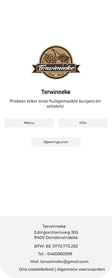
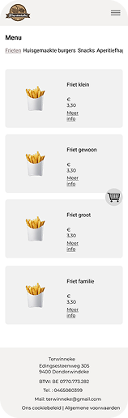
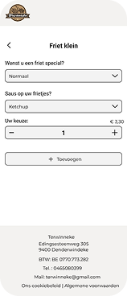
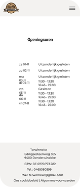
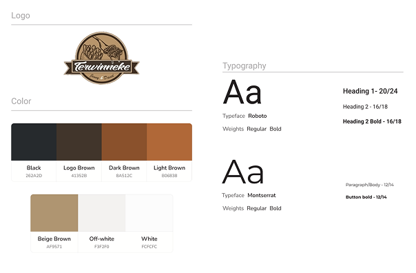
Accessibility in de praktijk
Toegankelijkheid was de rode draad doorheen dit project. Ik hield rekening met de WCAG-richtlijnen op niveau AA en documenteerde mijn keuzes op verschillende manieren.
Een belangrijk onderdeel was de reading order. Ik bepaalde zelf de volgorde van principes die in de les werden aangeleerd: van boven naar beneden en van links naar rechts. Dit zorgt ervoor dat schermlezers de inhoud in een logische volgorde voorlezen, ongeacht hoe de visuele layout eruitziet.
Ik voegde accessibility annotaties toe aan mijn designs om duidelijk te maken wat elk element is. Ik markeerde knoppen, links, afbeeldingen, decoratieve afbeeldingen, h1- en h2-koppen, inputvelden en voorzag waar nodig de accessibility name.
Daarnaast stelde ik een matrix op voor de brandkleuren. Deze matrix toont welke combinaties van tekstkleur en achtergrondkleur voldoen aan WCAG-niveau AA wat betreft kleurcontrast.
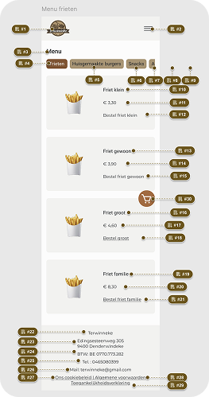
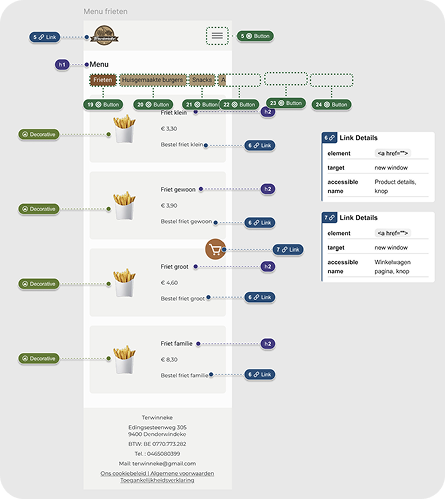
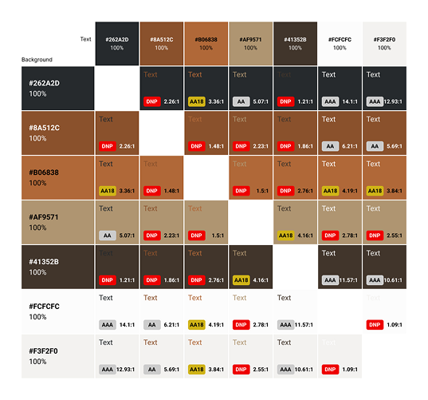
Resultaat
Het eindresultaat is een mobiele website voor Terwinneke die niet alleen visueel aantrekkelijk is, maar vooral toegankelijk en gebruiksvriendelijk voor een breed publiek. De website bevat alle vereiste pagina’s en functionaliteiten, met een duidelijke structuur, logische navigatie en aandacht voor detail.
Belangrijke verbeteringen ten opzichte van de originele website zijn:
- Een informatieve “Info”-pagina in plaats van een lege pagina.
- Een bestelproces zonder verplichte accountregistratie.
- Een overzichtelijke sauzenkeuze met duidelijke visuele ondersteuning.
- Een logische reading order voor schermlezers.
- Voldoende kleurcontrast en duidelijke typografie.
- Accessibility-annotaties die ontwikkelaars ondersteunen bij de implementatie.
Hoewel er geen gebruikerstesten werden uitgevoerd, focuste het project puur op het leren van toegankelijkheidsprincipes en biedt dit ontwerp een solide basis voor een website die voldoet aan WCAG-niveau AA.
